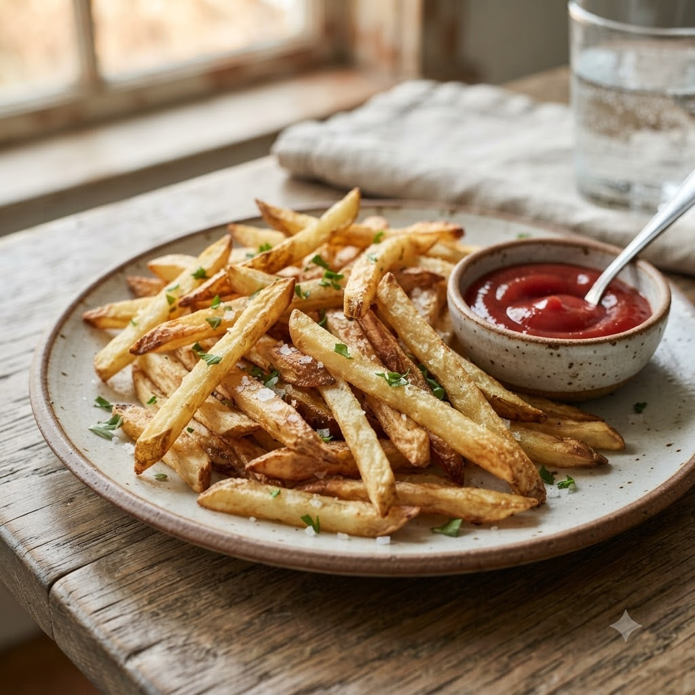

Crispy Air-Fried French Fries

Crispy Air-Fried French Fries
Airfryer – Fry 200°C 19 min — Serves 4
Prep ahead: Soak cut potatoes in water for 20 minutes before cooking to remove excess starch.
Ingredients
- 4 medium potatoes, cut into fries
- 1 tbsp oil
- 1 tsp salt
- 1/2 tsp paprika (optional)
Method
1Preheat: Preheat the Airfryer to 200°C for 4 minutes before adding the food to the basket.
2Soak cut potatoes in water for 20 minutes, then pat completely dry.
3Toss with the oil, salt and paprika.
4Place in the basket in a single layer; air-fry at 200°C for 19 minutes, shaking the basket every 5 minutes.
5Serve hot with ketchup or a dip of choice.
Tip: Soaking removes excess starch and is the real secret to crispiness.